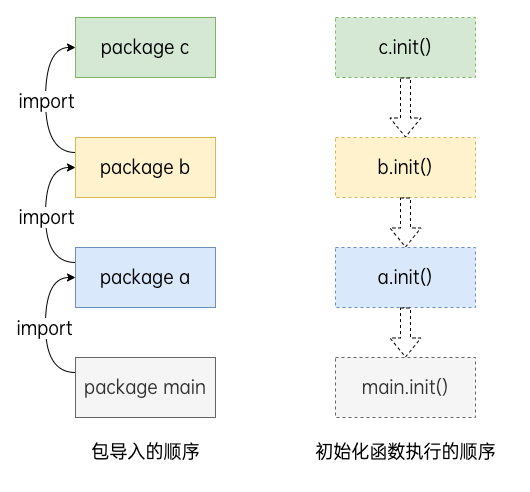

包管理¶
Go 语言中使用包来支持代码模块化和代码复用，一个包是由一个或多个 Go 源码文件组成的。定义包可以用package package_name语句，一个包可以简单地理解为一个存放 .go 文件的文件夹，该文件夹下所有的 .go 文件都视为该包的一部分。main包提供了应用程序的入口，该包编译后会得到一个可执行文件。
每个程序都是一个包，必须在源文件中非注释的第一行指明这个文件属于哪个包，如：package main。package main 表示一个可独立执行的程序，每个 Go 应用程序都包含一个名为main的包。
一个应用程序可以包含不同的包，而且即使你只使用main包也不必把所有的代码都写在一个巨大的文件里：你可以用一些较小的文件，并且在每个文件非注释的第一行都使用package main来指明这些文件都属于main包。
属于同一个包的源文件必须全部被一起编译，一个包即是编译时的一个单元，因此根据惯例，每个目录都只包含一个包。
如果对一个包进行更改或重新编译，所有引用了这个包的客户端程序都必须全部重新编译。
GO 程序的执行（程序启动）顺序如下：
- 按顺序导入所有被
main包引用的其它包，然后在每个包中执行如下流程： - 如果该包又导入了其它的包，则从第一步开始递归执行，但是每个包只会被导入一次。
- 然后以相反的顺序在每个包中初始化常量和变量，如果该包含有
init()函数的话，则调用该函数。 - 在完成这一切之后，
main也执行同样的过程，最后调用main()函数开始执行程序。

module¶
go module是 Go 语言的依赖管理工具，要启用它首先要设置环境变量 GO111MODULE：
- GO111MODULE=off：禁用模块支持，编译时会从 GOPATH 和 vendor 目录查找依赖包。
- GO111MODULE=on：启用模块支持，编译时会忽略 GOPATH 和 vendor 目录，只根据 go.mod 文件查找依赖包。
- GO111MODULE=auto：当项目在 GOPATH/src 外切项目根目录有 go.mod 文件时启用模块支持
go mod命令用于管理包，在使用前先用go mod init命令初始化项目。其中 Go 保留了两个特殊的 module 名：
- test：用于测试代码
- example：一些包会使用该名称作为教学或示例代码
go mod download 下载依赖的module到本地cache（默认为$GOPATH/pkg/mod目录）
go mod edit 编辑go.mod文件
go mod graph 打印模块依赖图
go mod init 初始化当前文件夹, 创建go.mod文件
go mod tidy 更新当前模块的依赖
go mod vendor 将依赖复制到vendor下
go mod verify 校验依赖
go mod why 解释为什么需要依赖
GOPROXY¶
GOPROXY 用于设置 Go 模块代理，使得拉取模块时可以通过镜像站点的方式：
多个代理地址用逗号隔开，direct指示 Go 回到源地址去抓取。
GOPRIVATE¶
设置了 GOPROXY 之后，go 命令就会从配置的代理地址拉取和校验依赖包。然而当我们在项目中引入了非公开的包（公司内部 git 仓库或 github 私有仓库等），此时便无法正常从代理拉取到这些非公开的依赖包，这个时候就需要配置 GOPRIVATE 环境变量。GOPRIVATE 用来告诉 go 命令哪些仓库属于私有仓库，不必通过代理服务器拉取和校验。
引入外部依赖¶
使用go get命令可以直接从远程仓库下载依赖的包，并在 go.mod 文件中记录依赖信息。
比如如果使用了go get example.com/theirmodule@v1.3.4命令，则会在 go.mod 文件中添加以下语句：
引入本地依赖¶
如果要引入本地依赖，此时分为两种：
- 源码在当前项目路径：
import "主包名/依赖包名" - 源码在其他项目路径：在 go.mod 文件中添加
require语句指定依赖的包，然后在 go.mod 文件中添加replace语句，指定依赖包的路径。